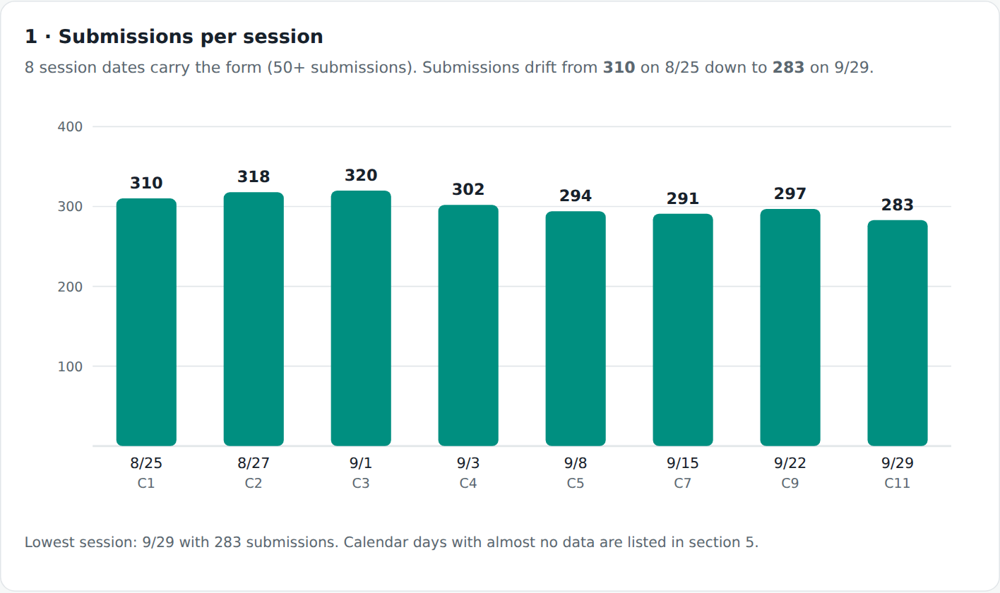
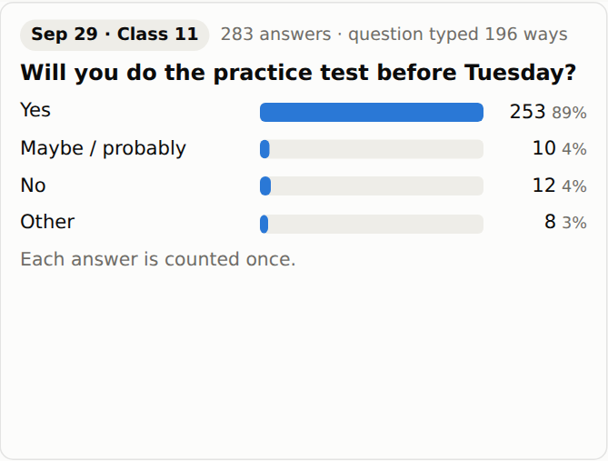
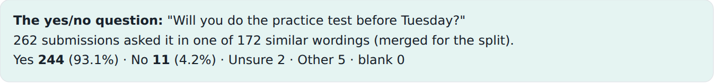
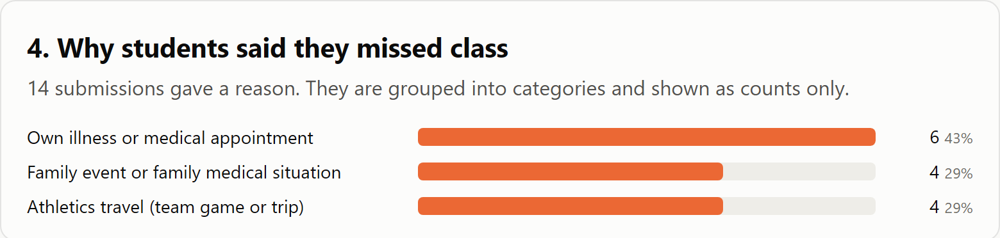
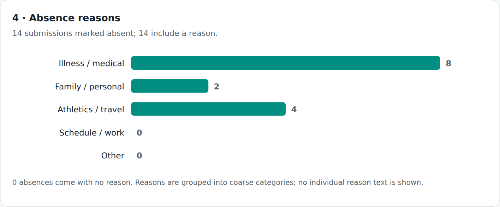

Finished results


The task
Turn a course form export into a short report with charts and a documented interpretation. Compare what two agent runs produced, including the choices that can change the answer.
The requested report has five parts: submissions per session, attendance-status responses, categorized question/answer patterns, aggregate absence reasons, and data-quality findings.
Starting materials
The checked snapshot contains 2,436 form submissions and nine columns. It has no student identifier or roster denominator. The raw file and the two analysis scripts are not published. Only the aggregate results are shared here, so read this as a case study. You can’t rerun it from these files, but the prompts work on your own data.
The Claude and DeepSeek labels come from the project folders. I have not verified the exact model versions, or that both runs got the same prompt. The prompt below is a reusable prompt for this task.
Step by step
Inspect the records before choosing charts
Confirm the unit, record count, field completeness, and date problems. A quoted CSV field can contain several lines, so counting text lines can overcount records.
View and copy the prompt
Inspect BITM330 Fall2026.csv read-only. Count CSV records with a CSV parser, not by counting physical text lines. Report column names, blank counts, date and class-number issues, and exact duplicate records. Treat one row as one form submission; do not infer unique students or an attendance rate. Do not silently correct dates, deduplicate, or reproduce student free text. Save an aggregate data profile before choosing the analysis.Checked result: 2,436 parsed records; 2,610 physical lines including the header. The 2,609 lines after the header match an old figure in DeepSeek’s plan, but that is not the number of submissions.
Specify the task and the output
Give the agent the file, analysis questions, constraints, output format, and required checks. Ask it to write down its rules for grouping free-text answers, so it doesn’t decide quietly.
View and copy the prompt
Analyze the supplied BITM330 Fall2026.csv and produce a self-contained HTML report that works offline. Use five sections: (1) submissions per session, (2) attendance-status responses overall and by session, (3) instructor question groups and categorized answer counts, including the practice-test yes/no question, (4) aggregate absence-reason categories, and (5) data-quality findings. Inspect the file first. Define and document every grouping rule and denominator. Treat one record as a form submission, not a unique student. Do not infer why sessions have few responses. Do not reproduce personal responses or absence explanations. Preserve the CSV unchanged. Save the analysis plan, reproducible code, computed aggregate results, and a work report. Verify totals and explain any difference between initial expectations and computed results.Open both completed reports
Begin with a result both agree on. The eight session counts are 310, 318, 320, 302, 294, 291, 297, and 283. The reports classify dates with at least 50 submissions as sessions. The CSV contains 21 other date entries. The cutoff of 50 is a choice the reports made. It does not prove those dates are errors.
Both report 2,408 present, 14 partially present, and 14 absent responses. These are shares of submissions, not a class attendance rate.
Compare like with like
Question Claude output DeepSeek output Basic volume 2,436 submissions; eight main sessions Same Answer grouping Groups by session; keyword themes can overlap Normalizes question wording and merges a practice-test question family Practice-test Yes 253 of 283 session answers (about 89%) 244 of 262 clustered responses (93.1%) Absence categories Medical 6; family 4; athletics 4 Medical 8; family 2; athletics 4 Unusual dates 21 outside the eight selected sessions 15 with implausible years plus six stray-date records Graphs HTML/CSS bars and question cards Inline SVG charts and tables Interpretation: 89% and 93.1% answer different selection rules. Do not rank the models from these percentages. The absence-category difference also depends on keyword matching and rule order.

Claude: all 283 answers for the selected session. Click to enlarge. 
DeepSeek: 262 responses selected by the question-family rule. Click to enlarge. 
Claude: aggregate absence categories, 14 records. Click to enlarge. 
DeepSeek: aggregate absence categories, 14 records. Click to enlarge. Check the methods and decide what to trust
Trace the numbers to the scripts and inspect the classification rules privately. Check sums, missing values, and excluded records. For question themes, verify a sample before treating keyword matches as meaning.
View and copy the prompt
Compare the saved Claude and DeepSeek reports against their documented methods. List agreements and differences in counts, denominators, grouping rules, missing values, chart design, and interpretation. Do not label one model more accurate without checking the underlying computation. For the practice-test comparison, explicitly distinguish all session answers from the selected question cluster. Count CSV records separately from physical lines. Preserve the reports and source data. Save a concise comparison and unresolved questions. For a small demonstration edit, make a separate report copy and change only one chart title; do not change its values or scale.Expected output: an explanation of where the reports agree, where they differ, and what is still undecided. It should not pick a winner.
Review and revisions
- The source record count and hash were independently checked for this walkthrough.
- The comparison figures match the saved reports. The two analysis scripts were not rerun for this walkthrough.
- One sentence in Claude’s HTML report said “14 students gave a reason”. It now says “14 submissions”, because the data has no student identifier. The screenshot below was retaken after that fix.
- DeepSeek’s old plan contains the 2,609 figure. Its final report uses 2,436. Physical-line counting explains the numerical match, but the original counting action is not documented.
- Claude’s session-based themes and DeepSeek’s wording clusters do not measure the same groups.
- No conclusion about missing online sessions follows from this export alone.
These are the outputs of two runs I already had. This is not a controlled benchmark. The chart images are screenshots of each report.
Try one small change
Make a copy of either HTML report and revise one chart title to make its unit clearer. Keep every value, denominator, category, and scale unchanged. Compare the before and after screenshots.
Files and resources
A clear chart is where the review starts.